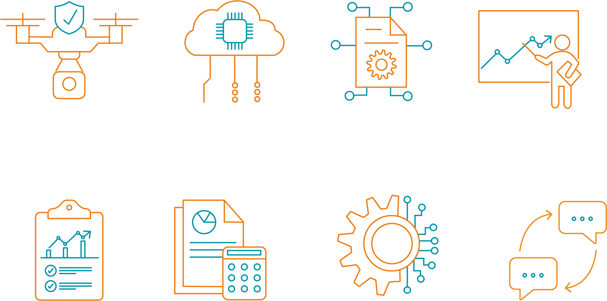
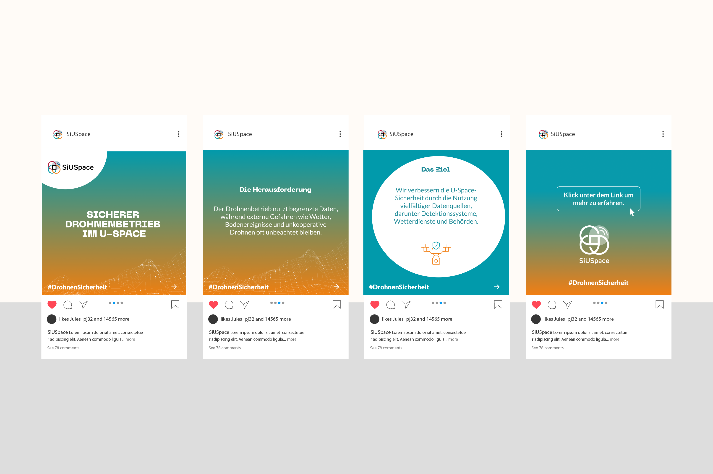
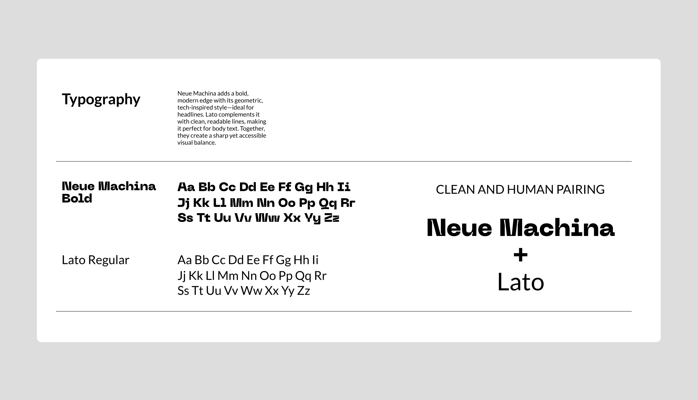

SiUSpace enhances drone safety by detecting and assessing external threats such as weather, uncooperative objects, or ground incidents. The project integrates diverse data sources and uses AI to generate automated response strategies. A lab system showcases these features, supported by communication and training concepts.
My role in the project included the conception and design of the website, as well as the programming and implementation using a CMS (WordPress).



https://www.siuspace.com